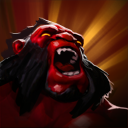
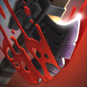

Dota 2 adalah video game arena pertempuran online multipemain yang dikembangkan dan diterbitkan
oleh Valve. Gim ini merupakan sekuel dari Defense of the Ancients, yang merupakan mod yang dibuat oleh komunitas
untuk Warcraft III: Reign of Chaos dari Blizzard Entertainment dan paket ekspansinya, The Frozen Throne.
Phantom Assassin
Mortred, the Phantom Assassin, is a melee agility hero fitting the role of hard carry.
Mortred is best-known, and infamous for, her ability to inflict staggering damage with single strikes.
Her abilities synergize supremely well with each other, rendering her an extremely formidable foe once she has acquired the items she requires.
Stifling Dagger
Throws a dagger slowing the enemy unit's movement speed, dealing 65+25%/40%/55%/70% of Phantom Assassin's attack damage as physical damage and applying attack effects from items and abilities.
Cast Animation: 0.3+0.47
Cast Range: 525/750/975/1200
Secondary Target Range Buffer: 300
Number of Targets: 1 (Talent 3)
Base Damage: 65
Attack Damage: 25%/40%/55%/70%
Move Speed Slow: 50%
Slow Duration: 1.75/2.5/3.25/4
6
30
Phantom Strike
Teleports to a unit, friendly or enemy, and grants bonus attack speed while attacking if it's an enemy unit.
Cast Animation: 0.25+0.8
Cast Range: 1000 (Talent 1350)
Attack Speed Bonus: 100/125/150/175
Duration: 2
11/9/7/5
35/40/45/50
Blur
Phantom Assassin focuses inward, increasing her ability to evade enemy attacks. Can be activated to blur her body, causing her to be impossible to see until near enemy heroes.
Cast Animation: 0.4+0.57 (Upgradable by Aghanim's Scepter. 0+0)
Evasion: 20%/30%/40%/50% (Talent 55%/65%/75%/85%)
Vanish Dispel Radius: 600
Vanish Fade Time: 0
Vanish Dispel Delay: 0.75
Vanish Duration: 25
60/55/50/45
50
Coup de Grace
Phantom Assassin refines her combat abilities, gaining a chance of delivering a devastating critical strike to enemy units. Stifling Dagger shares the same critical strike chance.
Proc Chance: 15%
Critical Damage: 200%/325%/450% (Talent 300%/425%/550%)
Axe
Axe is commonly played as an initiator, as his potent disables can disrupt the enemy's formation and give his team openings in fights. Axe's fighting style demands that he gets up close and very personal, as he can taunt enemies into attacking him with Berserker's Call,
preventing them from engaging his teammates and granting him a huge amount of bonus armor.
Berserker's Call

Axe taunts nearby enemy units, forcing them to attack him, while he gains bonus armor during the duration.
Cast Animation: 0.4+0.5
Radius: 300 (Talent 400)
Armor Bonus: 30
Duration: 2/2.4/2.8/3.2
16/14/12/10
80/90/100/110
Battle Hunger
Enrages an enemy unit, causing it to be slowed and take damage over time until it kills another unit or the duration ends. Axe gains movement speed for each unit affected with Battle Hunger, half speed from creeps.
Cast Animation: 0.3+0.5
Cast Range: 750
Radius: 0 (Upgradable by Aghanim's Scepter. 400)
Damage per Second: 16/24/32/40 (Talent 116/124/132/140)
Move Speed Slow: 12%
Self Move Speed Bonus: 12%
Enemy Damage Reduction: 0% (Upgradable by Aghanim's Scepter. 30%)
Duration: 12
20/15/10/5
50/60/70/80
Counter Helix
When attacked, Axe has a chance to perform a helix counter attack, dealing pure damage to all nearby enemies.
Radius: 275
Proc Chance: 17%/18%/19%/20%
Damage: 60/100/140/180
0.3
Culling Blade

Axe spots a weakness and strikes, instantly killing an enemy unit with low health, or dealing moderate damage otherwise. When an enemy hero is killed with Culling Blade, its cooldown is reset, and Axe and nearby allied units gain bonus movement speed.
Cast Animation: 0.3+0.5
Cast Range: 150
Kill Speed Bonus Radius: 900
Damage: 150/250/300
Kill Health Threshold: 250/350/450 (Talent 400/500/600)
Kill Move Speed Bonus: 30%
Kill Attack Speed Bonus: 30
Kill Bonus Duration: 6
75/65/55
60/120/180
Monkey king bar:Grants each attack a 75% chance to pierce through evasion and deal 100 bonus magical damage.
Proc Chance: 75%
Damage: 100
:4850
Makes you invisible for 14 seconds, or until you attack or cast a spell. While invisible, you move 25% faster and can move through units.
Attacking to end the invisibility will deal 175 bonus physical damage to the target, and disable their passive abilities for 4.
Fade Time: 0.3
Damage: 175
Move Speed Bonus: 25%
Invisibility Duration: 14
Break Duration: 4
22
75
:6100
Grants 35% additional movement speed for 2 seconds.
Move Speed Bonus: 35%
Duration: 2
25
:5275
Silences a target for 5 seconds. At the end of the silence, an additional 30% of all damage taken during the silence will be dealt to the target as magical damage.
All attacks on the silenced target will have True Strike and 100% chance to crit for 130% damage.
Cast Range: 900
Damage Amplification: 30%
Critical Proc Chance: 100%
Critical Damage: 130%
Duration: 5